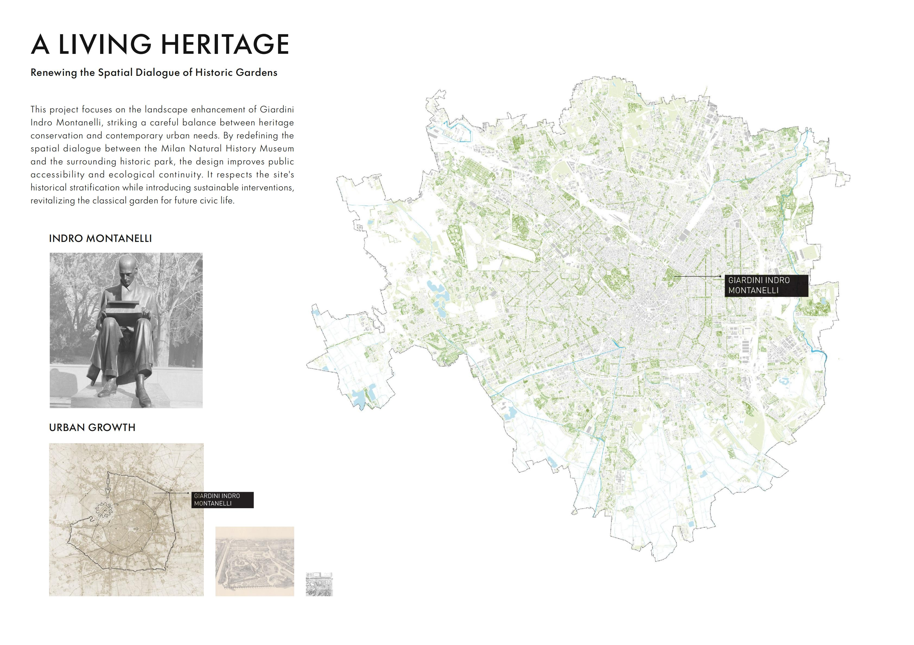
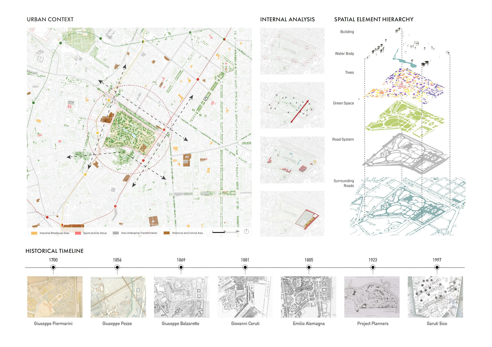
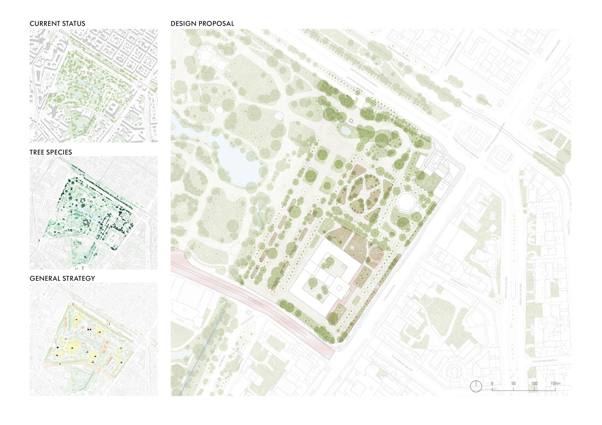
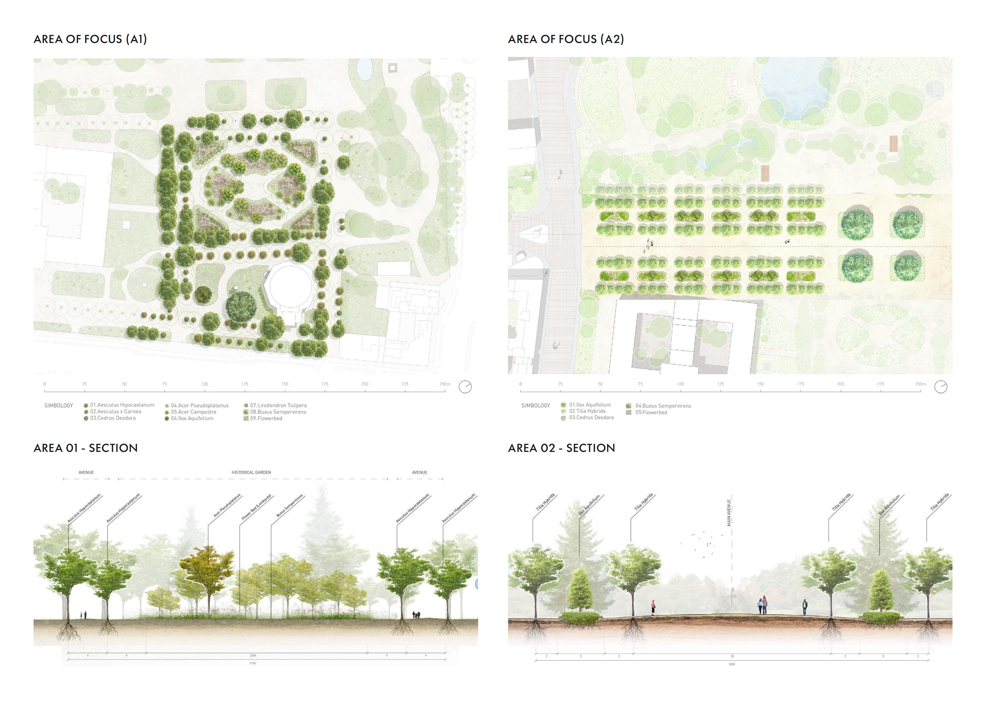

Giardini Indro Montanelli, Milan, Italy
Historic Garden Renewal / Cultural Landscape Conservation / Urban Public Space Design
Local Residents / Families / Visitors / Museum Users / Daily Park Users
Academic Project / Concept
A Living Heritage explores the renewal of Giardini Indro Montanelli, one of Milan's historic public gardens. Rather than treating heritage as a fixed image, the project understands the park as a layered and evolving landscape. Through historical research, spatial analysis and a detailed study of the existing tree system, the proposal strengthens the relationship between the garden, the Natural History Museum and the surrounding urban fabric. Carefully inserted planting areas, reorganised paths and renewed public spaces preserve the park's identity while supporting contemporary civic life.



